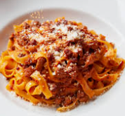

Tagliatelle Bolognese

Description
Another simple but heavenly recipe.
Paired with the "meaty" tagliatelle,
this is a real comfort food style dish.
Ingredients
- 1 - Whole Carrot
- 4 Tbsp - Olive oil
- 1/2 - Large onion (Finely diced)
- 800g - Lean minced beef
- 50ml - Red wine
- 50ml - Milk
- 500ml - Passata
- 1 - Beef stock cube
- 300ml - Boiling water
- 4 Tbsp - Tomato puree
Method
- Make up the beef stock using the boiling
water and the beef stock cube. Put this in a small saucepan
on a low heat to keep it hot.
- Heat the oil in a saucepan, fry the onion & carrot for until the onion has softened.
- Brown the mince.
- Once the mince is browned, pour in the red wine,
stir well then simmer for 2 minutes.
- Add the milk and follow the same steps
as you did with the red wine.
- Now you can add the beef stock you made earlier, as well as
the passata & tomato puree.
- Stir well, then bring to the boil.
- Once boiling place the lid on the pan
& turn the heat down to low medium.
Leave this to simmer for 1 to 1.5 hours
stirring occasionally.
- Boil the tagliatelle as per the instruction on the package.
- Serve & enjoy.
Bonus tip
I usually peel then grate the carrot on the cheese grater
to get it finer then I could chop it.